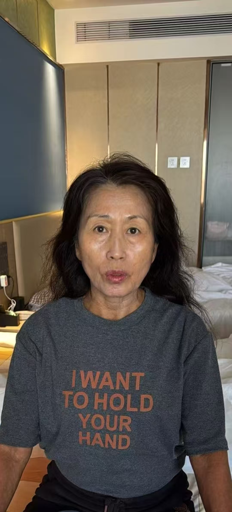

20261026五行还丹 分身化身 法器针 效果很好
符咒术法 原始对话记录教五行大还丹
教各种法术
哇，师父，看来这个徒弟不错
哇，试试看色卡 扑克牌♠️
@微微 确实不错，学的非常开心
上午问我教这么多，要不要补学费
我说不用
@呼和浩特 陈呼和 成人不学这些
只学生活实战
更厉害
简单易行
那真心好[呲牙][呲牙][呲牙]
脸都变白净了
非常神奇
长者变化大

那就真的是她们的恩人了
第一天跟第三天
第一张是第三天
皮肤问题在变化
自述睡眠好
变化太大了，他第一张的照片，我看到的时候，我是内心一颤，是觉得有点恐怖的，内心是觉得害怕的
实战实效
看得见的结果
👍👍👍
今天学的很开心
五行还丹
分身化身
法器针
效果很好
明天离潍
还有一上午，感觉没得教了
有机缘就开发功能
这么快就可以分身了啊
专业
因人而异
以下为编者整理的主题文章
编者整理 · 主题文章
第一天跟第三天
导读：教五行大还丹、分身化身、法器针。长者来时那张照片，他看一眼心里一颤；第三天再拍一张，皮肤在变，睡眠也好了。明天离潍，只剩一上午，"感觉没得教了"。
这一段是流水，绕着一件事转：长者变了。
教的东西排开——五行大还丹、各种法术。学生拿色卡、扑克牌试，说确实不错，学得非常开心。上午有人问，教这么多，要不要补学费。他答：不用。
"成人不学这些，只学生活实战，更厉害，简单易行。"
然后说到脸。"脸都变白净了。" 长者变化大。两张照片并排，第一天跟第三天，头一张是第三天。
"皮肤问题在变化，自述睡眠好。"
再往下那一句，是别人说的，不是他说的：第一张照片看到的时候，内心一颤，觉得有点恐怖，心里害怕。
他把这个叫作实战实效，看得见的结果。
一天收尾，列了三样：五行还丹、分身化身、法器针。效果很好。明天离潍，还有一上午，"感觉没得教了"。有人惊讶，这么快就可以分身了。他回四个字："因人而异。"
顺手还留一句：有机缘就开发功能。
说明与免责：本站为民间修炼、民俗文化与传统文化资料的整理与记录，内容源自传承者口传与个人修习体会，仅供文化交流与研究参考，不构成医疗、健康、投资或任何功效承诺。所述内容属传统术数范畴，请理性看待；如身体不适，请及时就医。请遵守法律法规与公序良俗。